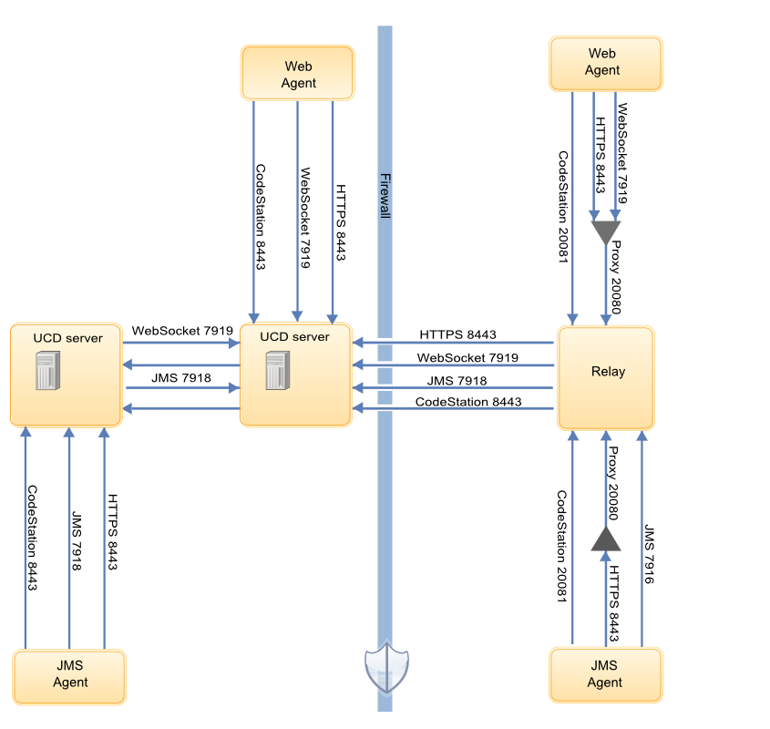

Web agents
Web agents use WebSocket and HTTP connections for communication. Web agents do not use JMS.
Web agent overview
Introduced with HCL® UrbanCode™ Deploy version 7.0.0, Web-type agents are more scalable and secure than the previous agent type. The earlier type is called the JMS agent. JMS agents use JMS and HTTP(S) to communicate with the server. Both agent types are supported and you can mix types in a single topology. You determine the type when you install the agent.
Web agents use the WebSocket protocol which is a bi-directional, point-to-point message protocol. WebSocket connections start as HTTP requests and upgrade to WebSocket protocol.
In the product user interface, Web agents are recognized by the Web designation. On the Agents page, for example, Web agents have the type Web. Other agents have the type JMS.
Web agent communication
During server installation, you specify a secure WebSocket connection. The connection information has the following format agentcomm.uri=wss://ucd-physical-host:port, and is stored in the ucd_server/conf/server/installed.properties file. The default port is 7919. This port serves WebSocket endpoints used by servers and Web agents and a REST API used only by Web agents.
When you use Web agents, each server in a cluster has a distinct URI and each server establishes a direct connection to every other server, which results in two connections between each server. The server-to-server connections advertise connected Web agents to the cluster and exchange messages for them.
When a new server is added to a Web agent-enabled cluster, it connects to the previously defined servers. The other servers respond by connecting back to the new one. In normal operation, each server has two connections to each of its peers.
When you install a Web agent, you specify the agentcomm.server.uri property. If there is one server or if all servers share an URL, it can be configured directly, for example agentcomm.server.uri=wss://ucd.example.org:7919. Configure multiple servers as a comma-separated list embedded in a random scheme, for example agentcomm.server.uri=random:(wss://ucd1.example.org:7919,wss://ucd2.example.org:7919).
Agents and relays connect to one or more servers at their respective URL port. They can be configured to use a common URL (for example, a load balancer), but servers must be configured with direct URLs. The agentcomm.proxy.uri property can define a single HTTP proxy URL, or define a list in a random scheme. The property is optional if the agent connects directly to servers.
The following diagram shows the default ports that are involved in communication between Web agents, JMS agents, agent relays, and servers.

Web agent security
Web agents use public-key pinning for strong out-of-box security. Agents and servers identify each other with SSL certificates. The public keys in the certificates are pinned on initial connection. When a public key is pinned, any certificate asserting the same identity must be generated with the same public/private key pair that was used to create the original certificate. Connections from clients or servers that do not correctly identify themselves are closed.
Important: Do not lose the server public/private key! Recovery requires manually clearing the server certificate pins for every Web agent. We highly recommend making a secure backup of all server keystores.
The server's configuration property agentcomm.keystore points to the keystore that contains the certificate and public and private key pair that the server uses to identity itself as the client. The server uses its JMS certificate to identity itself as the server in a connection.
Agents store pinned server public keys in the $ucd_agent/conf/agent/pinned-server-public-keys folder. Keys are stored as certificates in PEM formatted files. The file name corresponds to the host name in the certificate DN, but host names that contain characters that are not universally safe have more complex encoding.
Agents identify themselves with their end-to-end JMS encryption certificate and public/private key, which are stored in the $UCDAGENT/conf/agent.keystore folder. Agents only have a client identity.
Parent topic: Agents and agent relay configuration